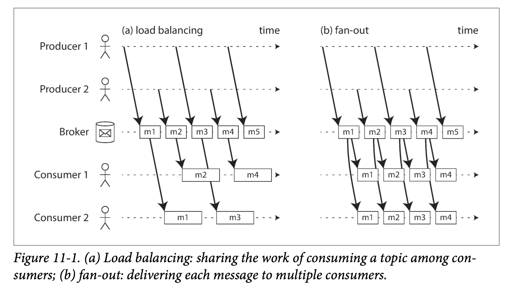
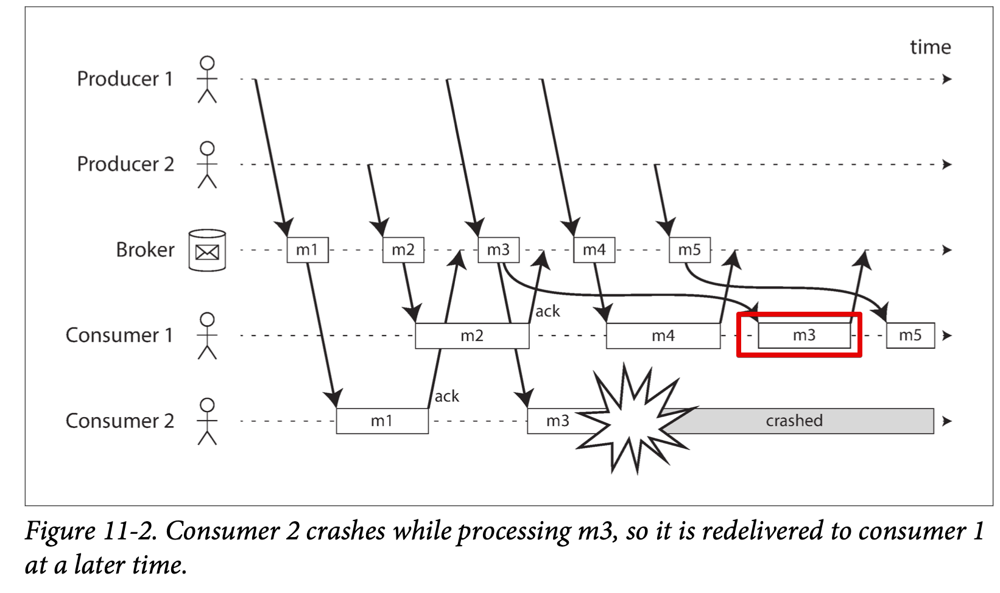
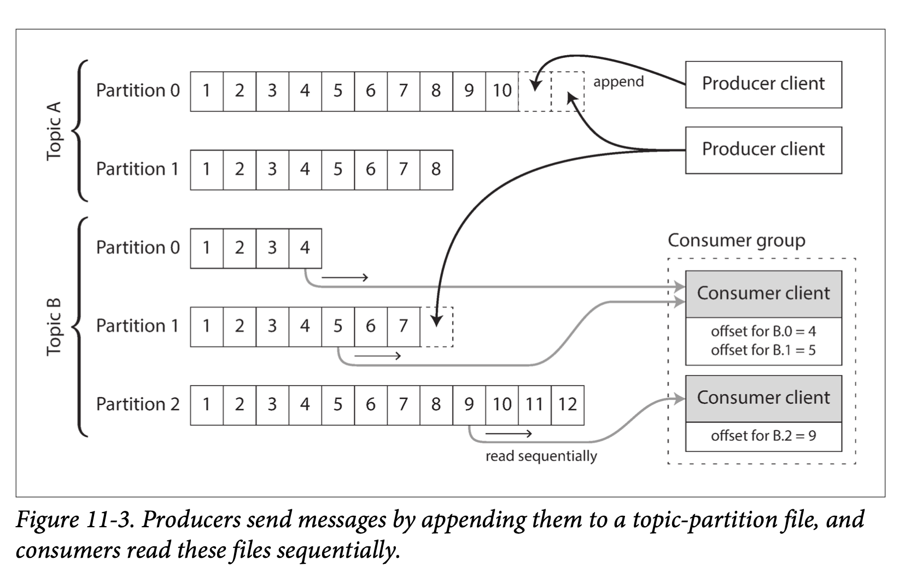
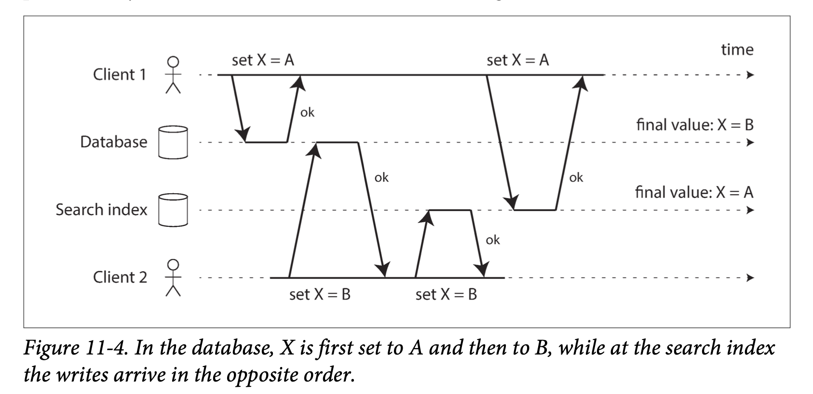
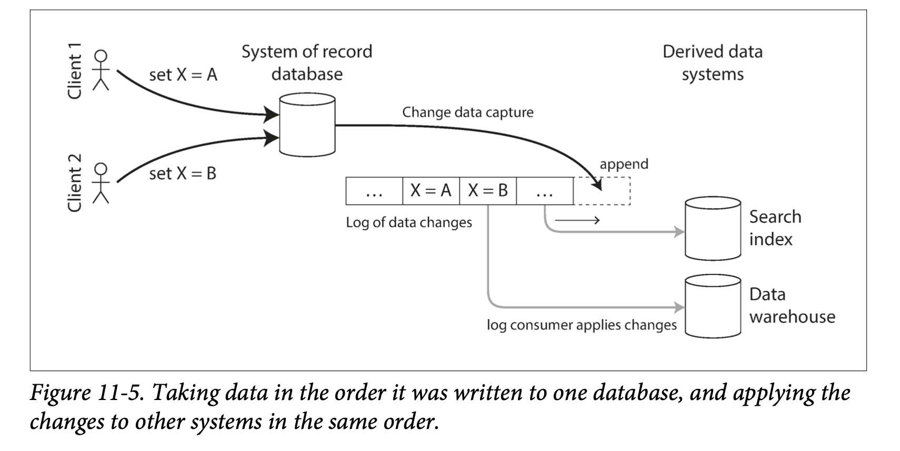
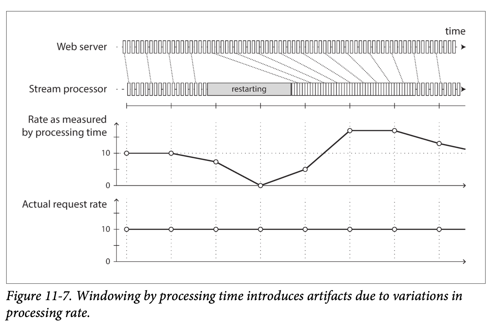

Chapter 11
Chapter 10 discussed about taking a set of input files, process it and output it into another set of files. This output is a form of derived data, i.e. a dataset that can be derived when needed
One assumption on chapter 10 is that the input are bounded which means finite size. And batch process is often rely on this property because sorting a set of data need to read all data before proceeding to the next job. But in reality a lot of data is unbounded where it arrives gradually over time, such as user activity. Batch process often need to set a end time such as end of a day to process daily user activity.
But this approach only reflect the output a day later, which might be slow for some users. We can run the process more frequent to reduce the delay (e.g. a second worth of data). Or just continuously process the data. This approach is called stream processing. This concept is in many places. Stdin and stdout in Unix system, TCP connections, deliver audio or video on internet etc.
This chapter will focus on event streams. First discuss about how stream is represented, stored, transmitted over the network. Compare those stream system with databases, and finally discuss about those tools for processing streams
Transmitting Event Streams¶
When processing input, batch will parse the input bytes into records, this is event in terms of stream system. They are essentially the same thing, a self contained immutable object that does something at a point of time. An event usually contains a timestamp.
For example, user make a purchase at certain time, temperature from a sensor, CPU metrics etc. Event may be encoded as text or JSON or binary form as discussed in Chapter 4. Compare to batch process where file is written once and might be read multiple times, stream system has a producer (publisher or sender) that generate an event and potentially multiple consumers (subscribers or recipients)
In a file system, file name group records together. In stream system, a topic or stream group related events together.
Messaging Systems¶
A common approach for notifying consumers about new events is to use messaging system: Producer sends a message and push it to consumers. Unix pipe or TCP connection would be a simple way of implementing a message system. Many system expand on this where unix pipe or TCP connection only allow one to one connection whereas messaging system allows multiple producer to send message into a topic and allows multiple consumer connect to this topic.
This is called publish/subscribe model and different system take a different approaches. To distinguish those system, two question might be helpful 1. What happens if producer is faster than consumer? Generally there are 3 options. 1. drop the message. 2. buffer message in a queue 3. apply back pressure (TCP and unix pipe does this. if the small buffer fills up, they slow down the producer) What happen if the queue grows very large? If we write it to disk, how does it impact performance? 2. What happens if a node crash or temporarily go offline? any message get lost? Writing to disk or replication has cost
Direct messaging from producers to consumers¶
A number of messaging system use direct network to connect between producers and consumers: - UDP broadcast is widely used in financial industry where latency matters. Although UDP itself is unreliable, application layer can recover the lost messages (producer must remember packet and resend on demand) - Brokerless messaging libraries such as ZeroMQ [9] and nanomsg take a similar approach, implementing publish/subscribe messaging over TCP or IP multicast. - StatsD [10] and Brubeck [7] use unreliable UDP messaging for collecting metrics from all machines on the network and monitoring them. - If consumer expose a service over the network, producer can send a request by using HTTP or RPC call. This is the idea behind webhooks [12] a pattern where a callback url is registered inside another service. This approach has limited reliability
Message brokers¶
Another approach that is widely used is message brokers (aka message queue) which is kind of a database that is optimized for handling message streams [13]. It runs as a server and producer and consumer connect to it.
This way client can come and go because durability problem goes into broker instead. Some broker only keep message in memory and other write to disk
broker/queue are often asynchronous (producer don't wait for consumer to respond, only wait for broker to respond)
Message broker/queue compare to databases¶
There are many differences between message queue and databases despite they both store data
- Database usually keep data until it is deleted explicitly. On the other hand, most message broker delete the message when it successfully deliver to consumer.
- Since they delete the message, message queue often assume their working set if often small.
- Database often support secondary indexes but not message queue (message queue can let consumer to select subset of data but it is different mechanism)
- Database support arbitrary queries but not message brokers/queue
Multiple consumers¶
Two patterns are used when multiple consumers are connect to same topic. 
Load balancing Each message is delivered to 1 of the consumer. This is useful when message are expensive to process Fanout Each message is delivered to all consumers
two patterns can be combined
Ack and redelivery¶
Broker use ack to ensure consumer received its message and successfully processed it. unacknowledged message can be redelivered to consumer but this will cause message out of order even if message queue try to preserve the order 
Partitioned Logs¶
Database and files are designed with permanent storage in mind and it is very good for reprocessing the data when needed (as in batch processing system) message queue doesn't have this in mind
Why can we not have a hybrid, combining the durable storage approach of databases with the low-latency notification facilities of messaging? This is the idea behind log- based message brokers.
Using logs for message storage¶
A log is simply an append only sequence of bytes on disk. Same can be used to implement a message broker: producer append the message at the end of the log. Consumer read the log sequentially and waits for the log to be updated if it reaches the end of the log. Unix tool tail -f which watches a file of data to be appended work like this
In order to scale to higher throughput, the log can be partitioned. Different partition can then be hosted on different machines. 
Within each partition, broker assign a monotonic increasing number or offset for each message. Apache Kafka [17, 18], Amazon Kinesis Streams [19], and Twitter’s DistributedLog [20, 21] are log-based message brokers that work like this.
Even though these message brokers write all messages to disk, they are able to achieve throughput of millions of messages per second by partitioning across multiple machines, and fault tolerance by replicating messages [22, 23].
Log vs traditional messaging system¶
Log natively support fanout because consumer can just read from an offset of a log.
To achieve load balancing, broker can assign a partition to a consumer group. Typically consumer will read all messages inside a partition in a straight forward single threaded manner. This approach has some downside - Number of nodes sharing the work can be at most the number of partitions - If a single message is slow to process, it holds up the processing of subsequent messages in that partition
When you want to parallelize message by message base, JMS/AMPQ works well. When you want to increase message throughput where each message is fast to process and ordering is important, log based is better
Consumer offset¶
With offset, broker doesn't need to wait consumer's ack but simply periodically remember which offset this consumer was on. With offset, batching and pipelining make increase in throughput possible.
This offset is similar to log sequence number from leader-follower replication scheme. In replication context, leader allows follower to reconnect and resume replication based on previous log sequence number. Same thing applies here, consumer act like a follower and message broker act like leader.
Disk space usage¶
If we keep append to a log, we will run out of disk space eventually. To reclaim disk space, older segments are deleted or moved to archive storage.
The log implements bounded buffer by using circular buffer or ring buffer where old message get overwrite by newer messages.
With 6TB disk and 150MB/s rate of writing, you could keep 11 hours of log history. And usually we don't keep full write speed all the time, so this log can sometime goes to days or weeks worth of messages
When consumers cannot keep up with producers¶
We have talked about 3 options previously 1. disgard the message 2. buffering 3. apply back pressure In this taxonomy, log based approach is under buffering category.
You can set alarms for consumer when it falls behind significantly because log buffer is large enough where human intervention can fix the consumer and allow it to catch up before missing messages
Replaying old messages¶
For JMS and AMQP style message broker, processing and acknowledging message is a destructive operation. Whereas log based mess
Databases and Streams¶
We see log based message system take idea from databases and apply them to messaging. Reverse is also possible: take ideas from messaging and streams, and apply them to databases
Event is a record of something that happened at some point in time. This could be user action or sensor reading. Or it could be write to database. The write operation can be seen as an event that can be captured, stored, and processed.
In fact, replication log is a stream of database write events. Follower process this stream of write events to their own database and end up with an accurate copy of the same data.
state machine replication principle in Chapter 9#Total Order Broadcast states: if every event represents a write to the database, and every replica processes the same events in the same order, then replicas will all end up in the same final state.
This is a hint for how we can solve heterogeneous data systems problems by bringing ideas from event streams to databases
Keeping Systems in Sync¶
Throughout this book, we have seen no single data system can satisfy all storage, querying, processing needs. In practice, applications need to combine several different technologies in order to satisfy their requirements: An OLTP database to serve user requests, a cache to speed up common requests, full text index to handle search queries, and a data warehouse for analytics
Same as for computing, GPU and CPU all have memory in common to process different needs
As related data appears in several different places, they need to be kept in sync. If item is updated in database, it also needs to be updated in the cache, search indexes, and data warehouse.
As we see batch process from previous chapter, we can see it can create search indexes and copy of database during each batch job. But periodic full data dump is too slow. An alternative is dual writes. But this can face race conditions

Another problem is one of the write may fail. In order to ensure that they either both succeed or fail, we need to solve atomic commit problem which could be expensive (2PC or consensus)
Figure 11-4 isn't single leader so conflicts can occur. If we could make the search index a follower of the database, it could be much better.
Change Data Capture¶
Replication log has long been consider an internal implementation detail of database. More recently, there has been growing interest in change data capture (CDC), which is the process of observing all data changes written to a database and extracting them in a form in which they can be replicated to other system
You can capture changes in database and continually apply them in search index 
Implementing change data capture¶
Log consumers can be called derived data systems as discussed in Part 3: data stored in search index and data warehouse is just another view onto the data in the system of record.
Change data capture can be seen as mechanism for ensuring all changes made to the system of record is reflected in derived data systems
CDC basically made one database the leader and all into followers. A log based message broker is well suited for transporting source database changes to all followers
Change data capture can implemented by using database triggers, but trigger based tend to be fragile and have performance overhead. More robust approach is to parse the replication log.
LinkedIn’s Databus [25], Facebook’s Wormhole [26], and Yahoo!’s Sherpa [27] use this idea at large scale. Bottled Water implements CDC for PostgreSQL using an API that decodes the write-ahead log [28], Maxwell and Debezium do something similar for MySQL by parsing the binlog [29, 30, 31], Mongoriver reads the MongoDB oplog [32, 33], and GoldenGate provides similar facilities for Oracle [34, 35].
Initial snapshot¶
If you have all the changes from a log, then you can reconstruct the database by replaying the log. But keep all changes forever is not feasible in reality (too much disk space), replaying it takes too long. so the log needs to be truncated
If you don't have entire snapshot history, you need to start with a snapshot. Which is all data that are stored at some point in time in that database. With this snapshot, you know at which point to start applying changes after the snapshot has been processed. Some CDC tools integrate this snapshot facility.
Log compaction¶
Log compaction is a good alternative if you don't want to go through snapshot process every time you want to add a new derived data system
Log compaction is done by periodically throw away duplicate record for same key and only keep the latest value (most recent update)
With this compaction, you can scan through the change log and apply them to get the full copy of the database without having to take another snapshot of the CDC source database.
This log compaction feature is supported by Apache Kafka.
Event Sourcing¶
There are some parallels between the ideas we’ve discussed here and event sourcing, which is storing all changes to the application state as a log of change events. The biggest idea is that event sourcing applies the idea at a different level of abstraction: - In CDC, it is low level ensured by the database where application doesn't have to be aware of this is happening - In event sourcing, event store are designed to reflect the changes at application level For example, game replay can use event sourcing to store all user activity to replay an entire game
Event sourcing helps to debug application by making it easier to understand after the fact why something happened.
For example, storing the event "student cancelled their course enrollment" is way better than "one entry was deleted from the enrollments table, and one cancellation reason was added to the student feedback table"
Command and events¶
The event sourcing philosophy carefully distinguish between events and commands.
When user request arrives, it may still fail so it is initially a command. If the validation is successful and command is accepted, it becomes an event (which is durable and immutable)
At the event is generated, it becomes a fact. A consumer of the event stream is not allowed to reject an event.
State, Stream, and Immutability¶
The principle of immutability makes event sourcing and change data capture powerful
mutable state and log of immutable events are two sides of the same coin. where current state is the integral of event stream over time and stream at time t will be the differentiate of the state by time $$ state(now) = \int_{t=0}^{now} stream(t) dt $$
Advantages of immutable events¶
Immutability is an old idea in database. For example, accountants have been using immutability for centuries in financial bookkeeping. When transaction occurs, it is recorded in an append-only ledger.
If a mistake is made, accountants don't erase or change the incorrect transaction in the ledge but add another transaction to compensate for the mistake instead.
Immutable events capture more information than just the current state. For example if a user add an item to their cart and latter deletes it, from order fulfillment's view nothing happens, but for analytics purposes the customer was considering a particular item but then decided against it. This information is captured in an event log but lost in a database
Deriving several views from the same event log¶
separate logs from mutable state can derive several different read-oriented representation. For example, analytic database Druid ingests from Kafka, Pistachio k-v store uses Kafka as a commit log. It would make sense for many other storage to take their input from distributed log
Having a translation step from event log to a database makes it easier to evolve application over time. If you want to introduce new features, you can use the event log to build a separate view for the new feature and run it alongside the existing systems without modifying them. Running old and new systems side by side is often easier than performing complicated schema migration in an existing system.
With log based approach, you don't have to assume data must be written in the same form as it will be queried.
Concurrency control¶
The biggest downside of event sourcing and change data capture is that consumer are usually asynchronous. So it is possible for a user make a write to the log and find their write has not been reflected in the read view.
One solution would be perform the updates of the read view synchronously with appending the event to the log which requires atomic transaction and requires keep the event log and read view in the same storage system. Or we can use distributed transaction to achieve this
Deriving current state from event log simplifies concurrency control. With event sourcing, you can design an event such that it is self-contained where user action only requires a single write in one place -- namely appending the events to the log
Processing Streams¶
There are 3 options for processing streams 1. Take the data in events and write it to a database, cache, search index, or similar storage system 2. Push events to user in some way, for example by sending email notifications, or streaming events by real-time dashboard. In this case, human is the consumer of the stream 3. Process 1 or more input streams and produce 1 or more output streams and output either option 1 or 2 (machine or human)
The rest will discuss about option 3: processing streams to produce other derived streams. A piece of code that process streams is known as an operator or a job. It is closely related to Unix processes and MapReduce jobs
The patterns of partitioning and parallelization in stream processors are very similar to those in MapReduce in Chapter 10 so we won't repeat those topics here.
Since stream data is unbounded, sort-merge joins cannot be used. Fault tolerance mechanisms must change: batch job can restart a failed task, but with streaming job that has been running for a long time is not a viable option
Uses of Stream Processing¶
Stream has long been used for monitoring purposes. For example - Fraud detection systems need to determine if the usage patterns of a credit card have unexpectedly changed, and block the card if it is likely to have been stolen - Trading systems need to examine price changes in a financial market and execute trades according to specified rules. - Manufacturing systems need to monitor the status of machines in a factory and quickly identify the problem if there is a malfunction - Military and intelligence systems need to track potential sign of attack
Complex event processing¶
Complex event processing(CEP) is an approach developed in the 1990s for analyzing event streams, especially when application need to search for certain event patterns. Just like regular expression allows you to search for certain patterns of characters in a string, CEP allows you to specify rules to search for certain patterns of events in a stream
CEP systems often use a declarative query language like SQL or a graphical user interface. These queries are submitted to a processing engine that consumes the input streams and maintains a state machine that performs required matching. When a match is found, it emits a complex event with details of the event pattern that was detected
The relationship between queries and data is reversed in these system compare to normal databases.
Normally, databases store data persistently and queries are consider transient. CEP engines reverse these roles: queries are stored long-term, and events from the input streams continuously flow past them.
Stream analytics¶
Another area for stream processing is to add analytics on streams. The boundary is blurry between stream analytics and CEP. As a general rule, analytics is less interested in specific event and is more interested toward aggregations and statistical metrics over large number of events. For example,
- Measuring the rate of some type of event
- Calculating rolling average of a value over some time period
- Comparing current statistics to previous time intervals
Such statistics are usually computed over fixed time intervals. For example, you want to know average QPS for a service over last 5 mins. Or average TPS in 5 mins period over last day, and 99th percentile response time during that period.
Many open source distributed stream processing frameworks are designed with analytics in mind: for example, Apache Storm, Spark Streaming, Flink, Concord, Samza, and Kafka Streams [74]. Hosted services include Google Cloud Dataflow and Azure Stream Analytics.
~~#### Maintaining materialized views We have discussed about materialized view previously where it is an alternative view on some dataset so we could query it more efficiently In event sourcing, the application state is kind of a materialized view. ~~
Search on streams¶
Sometimes we need to search for individual events based on complex criteria, such as full text search queries.
For example, media monitoring services subscribe to feeds of news articles and broadcasts from media outlets and search for any news mentioning companies, products or topics of interests. This is done by creating a search query in advance and then continually matching the stream of news items against the query. Similar feature existing on website, user get notification when a house that matches their criteria shows up on the market.
The percolator feature of Elasticsearch is one option of implementing this kind of stream search
Reasoning About Time¶
Stream processor often need to deal with time, especially when used for analytics such as "average over last 5 minutes"
Many stream processing framework use local system clock to determine windowing. This approach has advantage of being simple, but it breaks down if there is significant processing lag, i.e. if the processing may happen way much later than the time at which the event actually occurred.
Event time vs processing time¶
There are many reason why processing might get delayed. Network fault, queueing, a restart of consumer process, or reprocessing past events.
On top of that, message delay can lead to unpredictable ordering of messages. If user first make web request handled by web server A and then second request handled by web server B. A and B emits event to message broker and B's event reaches message broker first. Now stream processor will see B's event first even though they actually occurred in the other way around.
If it helps to have an analogy, consider the Star Wars movies: Episode IV was released in 1977, Episode V in 1980, and Episode VI in 1983, followed by Episodes I, II, and III in 1999, 2002, and 2005, respectively, and Episode VII in 2015 [80].ii If you watched the movies in the order they came out, the order in which you processed the movies is inconsistent with the order of their narrative.
(The episode number is like the event timestamp, and the date when you watched the movie is the processing time.)

You can declare when to timeout for a window to process all the events. For example, when we grouping events into 1 min windows and after 1 min passed, it could still happen that some events were buffered on another machine somewhere, delayed due to a network interruption. These straggler events need to be handled. We have 2 options: 1. Ignore it. Alert if we start dropping a significant amount of data 2. Publish a correction, an updated value for the window with stragglers included.
Whose clock are you using, anyway?¶
Event may be delayed for hours or days if mobile device doesn't have internet connection. (events are buffered locally)
In this context, the timestamp on the events should really be the time at which user interaction occurred, according to the mobile's local clock. However it cannot be trusted, because user might accidentally or deliberately set to the wrong time. The time at which event was received by the server is more accurate since you have control over your server.
To adjust for incorrect device clocks, one approach is to log 3 timestamps: 1. At time at which the event occurred (device clock) 2. At time event was sent to server (device clock) 3. Time at which event was received by the server (server clock)
subtracting 3rd and 2nd, you can estimate the offset between device clock and server clock. You can then apply that offset to the event timestamp thus estimate true time at which event occurred
Types of windows¶
Tumbling window A tumbling window has fixed length, and every event belongs to exactly one window. For example, if you have 1min tumbling window, all timestamp between 10:03:00 and 10:03:59 are grouped into one, and 10:04:00 to 10:04:59 grouped into another. Hopping window A hopping window also has a fixed length, but allows windows to overlap in order to provide some smoothing. For example, 5 mins window with a hop size of 1 min would contain events from 10:03:00 and 10:07:59 and next window would cover between 10:04:00 and 10:08:59 Sliding window A sliding window contains all the events that occur within some interval of each other. For example, a 5 mins sliding window would cover events at 10:03:39 to 10:08:12 Session window Session window has no fixed length. It is defined by grouping together all events for the same user that occur closely together in time.
Stream Joins¶
Joins on streams are more challenging than batch jobs. We have 3 types of joins stream-stream joins, stream-table joins and table-table joins
Stream-stream join (window join)¶
Let's say you want to detect recent trends in searched-for URLs. Every time someone types a search query, you log an event containing the query and results returned. Every search result clicked by user is recorded as an event. In order to calculate the click-through rate for each URL in the search results, you need to join the events for the search action and the click action
The click may never come if user abandons their search. Or they may be hours or days apart (user searched for something and left the tab open and only click after few days later) In this case, we can choose suitable window for the join -- for example, only join a click with a search if they occur at most one hour apart
To implement this type of join, a stream processor needs to maintain state: for example, all the events that occurred in the last hour, indexed by session id. Whenever a search event or click event occurs, it is added to the appropriate session.
Stream-table join (stream enrichment)¶
In previous chapter, we see example of joining user activities with user profile. Naturally user activity can be think of a stream and processed continuously by stream processor. To perform this join, the stream process needs to look at one activity at a time and look up user ID from the database (remotely), and add profile information to the activity event.
Another approach is to load a copy of the database into the stream processor so that it saves network trip.
Table-table join (materialized view maintenance)¶
Consider Twitter timeline example and that when a user wants to view their home timeline, it is too expensive to iterate over all the people the user is following
We want the timeline cached instead, per user "inbox" so that reading the timeline is a single lookup. Materializing and maintaining this cache requires the following: - When user u sends a new tweet, it is added to the timeline of every user who is following u - when a user deletes a tweet, it is removed from all user's timelines. - when user \(u_{1}\) starts following user \(u_{2}\) recent tweets by \(u_{2}\) are added to \(u_{1}\)'s timeline. - When user \(u_{1}\) unfollows \(u_{2}\), tweets by \(u_{2}\) are removed from \(u_{1}\)'s timeline.
To implement this in a cache by stream processor, you need streams of events for tweets and follow relationships.
Basically joining two tables (tweets and follows)
SELECT follows.follower_id AS timeline_id,
array_agg(tweets.* ORDER BY tweets.timestamp DESC)
FROM tweets
JOIN follows ON follows.followee_id = tweets.sender_id
GROUP BY follows.follower_id
Fault Tolerance¶
Batch process can tolerate fault pretty easily because all outputs are written to file. Fault tolerance is less straightforward for streaming
Microbatching checkpointing¶
One solution is to break stream into small blocks and treat it as mini batch process called microbatching and it is used by Spark Streaming.
Another approach is used in Apache Flink where it periodically generate rolling check points and write them to durable storage.
Rebuilding state after failure¶
Any stream that requires state -- any tables or indexes used for joins-- must ensure this state can be recovered after a failure.
One option is to keep state in remote datastore and replicate it. Or keep state local to the stream processor and replicate it periodically. so when stream processor fails, it can recover by reading replicated state and resume processing
For example, Flink periodically captures snapshots of operator state and writes them to durable storage such as HDFS
Summary¶
In this chapter we have discussed event streams, why we need them and how to process them. It is similar to batch process but with unbounded data.
We spent time comparing two types of message brokers AMQP/JMS-style message broker The broker assign individual messages to consumers and consumers ack individual messages when they successfully processed them. This approach is appropriate as an asynchronous form of RPC Log based message broker The broker assigns all messages in a partition to the same consumer node. consumer get message by reading from an offset.
Stream can come from user activities, sensors, data feeds (market data in finance)
Representing database as streams opens up the possibility of integrating different data systems. You can keep derived data such as search indexes, caches up to date by consuming the log of changes and applying them to the derived system.
We discussed several purpose of stream processing, such as searching for event patterns (complex event processing), aggregations (stream analytics), and keep derived data system up to date.
We also talked about 3 types of joins stream-stream joins: related events within some window of time stream-table joins: one side is input from stream, another is data from database (user profile) table-table joins: both input are database changelogs.